تَعالَ / تَعالَيْ
gel
Öğrenci bize doğru yürüyor: izleyici çağıran kişidir, ok gerekmez. Konuyu ilk açarken D çiftiyle birlikte verin.
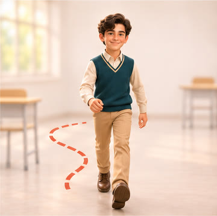
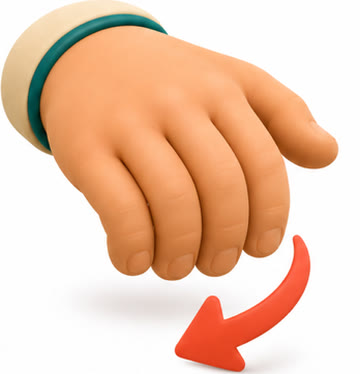
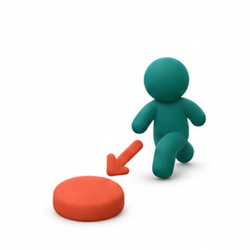
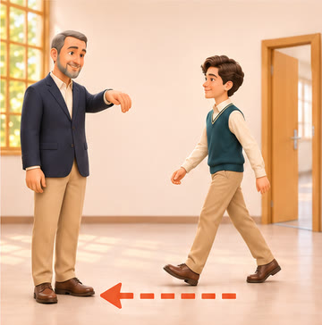
Pre A1 ailesi · resim kataloğu
Kataloğu PDF indirBaskı provası (A4)
Yön, ses ve algı fiilleri tek kişilik resimde birbirine karışıyor. Başka dillerin kitaplarının ve iletişim panolarının bu işi nasıl çözdüğüne baktık, 18 zor fiil için dört ayrı usulle küçük baskıya uygun resim ürettik, yönerge simgelerini de ekledik.
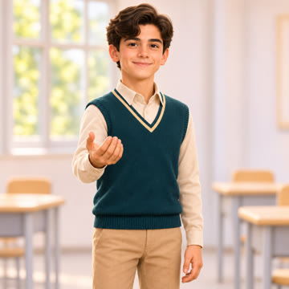
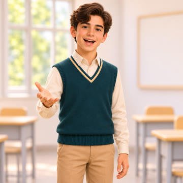
Bugünkü Pre A1 resimleri: ikisi de açık avuç ve gülümseyen yüz. Küçük basılınca öğrenci hangisinin "gel" olduğunu ayırt edemez.
Altı usul öne çıktı. Hiçbiri tek başına yetmiyor, ama her fiil için en az biri işi çözüyor.
Gel ve git konuşana göre yön bildirir. İngilizce öğrenen Japonlar da, İspanyolca öğrenen Polonyalılar da bu fiillerde zorlanıyor; resim, konuşanın nerede durduğunu göstermezse anlam kaybolur. Bizim çözüm: kamera emri veren kişidir.
Japonca 行く/来る, Çince 去/来 dersleri; deixis çalışmaları
Çizgi roman araştırmalarında hareket çizgileri olayı daha iyi anlattırıyor. Küçük çocuklar ise çizgiyi rüzgâr sanabiliyor. Ok kalın, kısa ve bir hedefe (kapı, kişi) bağlı olmalı.
Cohn ve Maher 2014; Gross 1991
ARASAAC, Widgit gibi setler yüzsüz, şematik figürle fiil anlatıyor ve anlaşılırlıkları ölçülmüş. Dikkat: ARASAAC'ta sağa-sola ok zaman anlamına da geliyor. Kitapta okun tek bir anlamı olmalı.
ARASAAC saydamlık çalışmaları
Ders kitapları gel/git, aç/kapat gibi fiilleri yan yana, aynı sahnede verir. Öğrenci farkı karşılaştırarak bulur. Arapça 9 s.57 da bu usulle kurulmuş.
Arapça 9 s.57; Minna no Nihongo 5. ders
Emir kipi, bedenle öğretmenin (Total Physical Response) asıl alanı. Resimdeki el işareti öğretmenin sınıfta yaptığı hareketle aynı olursa kitap ve sınıf birbirini destekler.
Asher, TPR
Okuması zayıf öğrenci için yönerge simgeleri yazının yerini tutar. Önce simge tek başına tanıtılır, sonra yazıyla eşleştirilir; simge kitap boyunca hiç değişmez.
AMEP öğretmen kaynakları
Her fiil için A sahne, B el, C simge, varsa D çift adayı. Mercan çerçeveli olan bizim önerimiz. Resimlere baskı boyutunda bakmak için aşağıdaki düğmeleri kullanın.
تَعالَ / تَعالَيْ
Öğrenci bize doğru yürüyor: izleyici çağıran kişidir, ok gerekmez. Konuyu ilk açarken D çiftiyle birlikte verin.




اِذْهَبْ / اِذْهَبي
Sırtı bize dönük, kapıya uzaklaşıyor. Tek başına bile gel'in tersi olarak okunuyor.
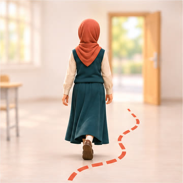
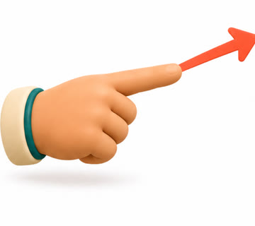
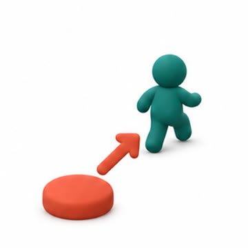
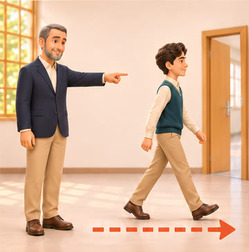
اُدْخُلْ / اُدْخُلي
Kapının eşiğinde, yüzü bize: içeri geliyor. 20 mm altında C simgesi daha iyi.
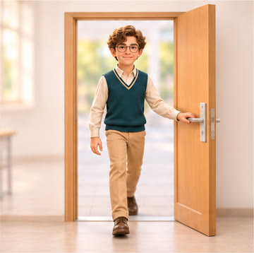
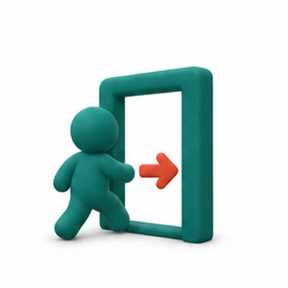
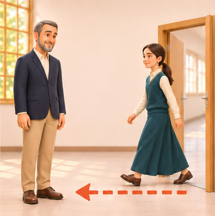
اُخْرُجْ / اُخْرُجي
Aynı kapı, sırtı bize, ötesi ışıklı dış: dışarı gidiyor. Gir ile yan yana basılırsa fark kesinleşir.
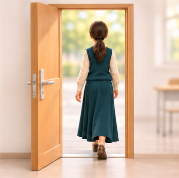
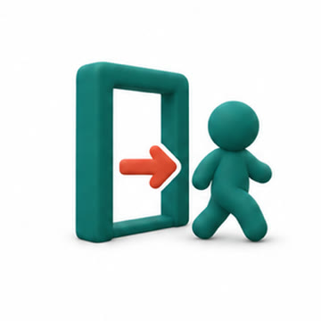
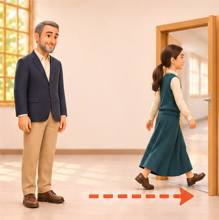
اِرْجِعْ / اِرْجِعي
Figür ve U ok, en küçük boyda bile okunuyor. Sahnedeki dönüş hareketi küçülünce kayboluyor.
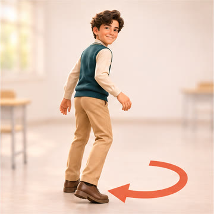
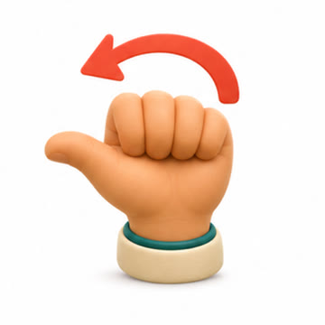
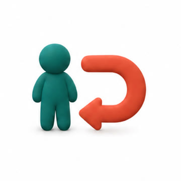
اِنْتَظِرْ / اِنْتَظِري
Kum saati süreyi tek nesneyle anlatıyor. Sahnede duvar saati küçükte okunmuyor.
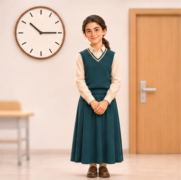
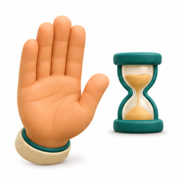
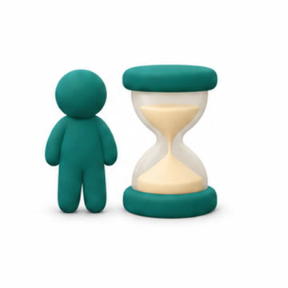
تَكَلَّمْ / تَكَلَّمي
Ağzı açık, boş balon ve el. Sus ile çift yapılırsa (D) en kesin hâli.
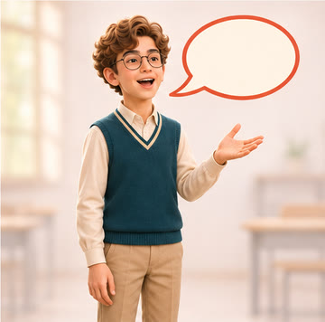
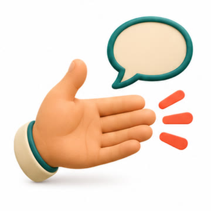
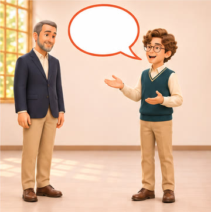
اُسْكُتْ / اُسْكُتي
Parmak dudakta; her kültürde aynı işaret. Balon yok.
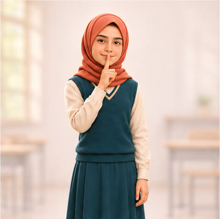
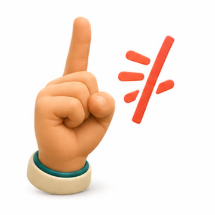
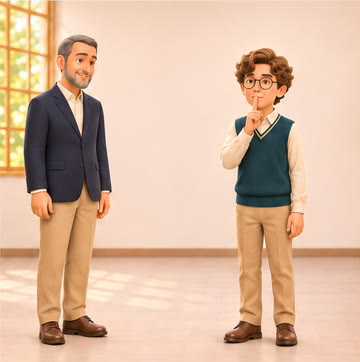
اِسْتَمِعْ / اِسْتَمِعي
Kulaklık, kitaptaki dinleme simgesiyle aynı nesne: öğrenci ikisini bağlar. Yalnız el isteniyorsa B.
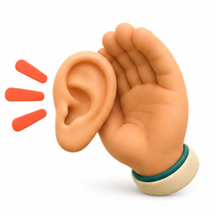
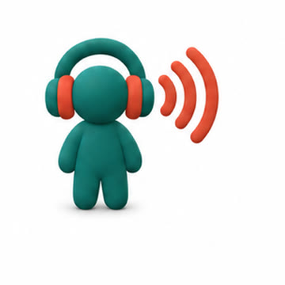
أَعِدْ / أَعيدي
İki balon ve dönen ok: aynı sözü yeniden söylemek. Sahnede balonlar küçükte birbirine karışıyor.
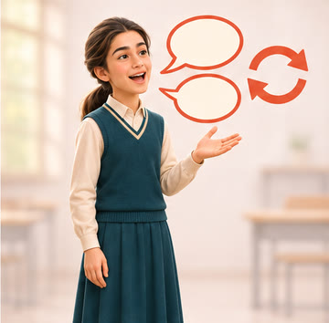
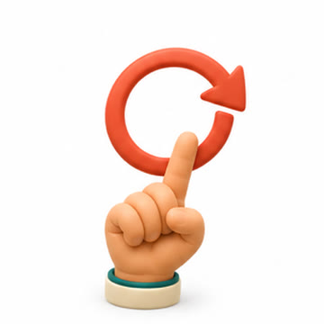
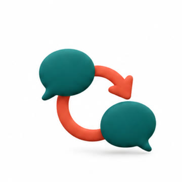
اِسْأَلْ / اِسْأَلي
Sınıfta söz isteyen kalkık el, herkesin tanıdığı jest. C'deki soru işareti Arapça yönüne çevrildi (؟).
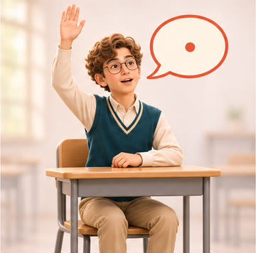
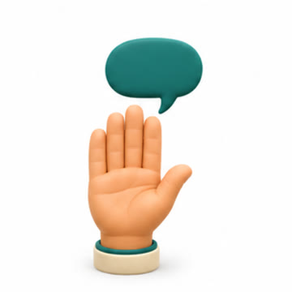
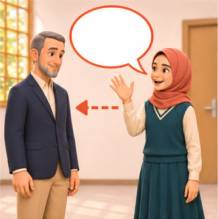
أَجِبْ / أَجيبي
Tek resimde konuş'tan ayrılmıyor; ancak sor ile çiftte, balonun yönü değişince anlaşılıyor.
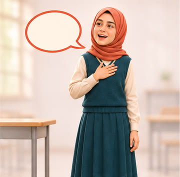
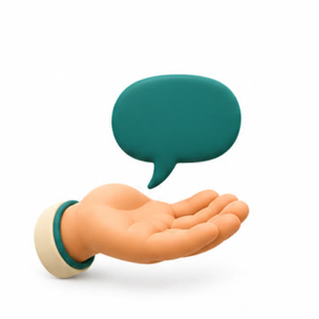
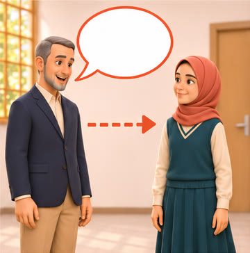
اُنْظُرْ / اُنْظُري
Siper el ve bakış oku. Yalnız göz simgesi (C) yüzsüz kullanım gerekirse.
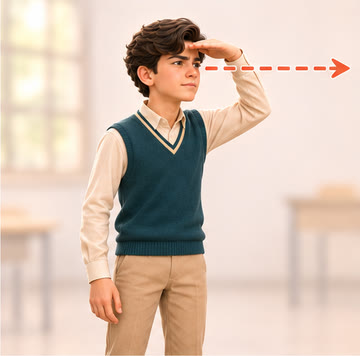
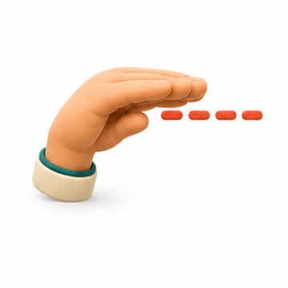
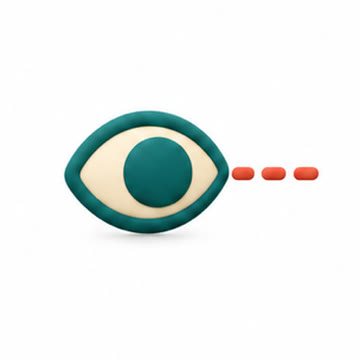
شاهِدْ / شاهِدي
Ekran karşısında oturan öğrenci. Yönerge satırında küçük kullanılacaksa yönerge simgesi.
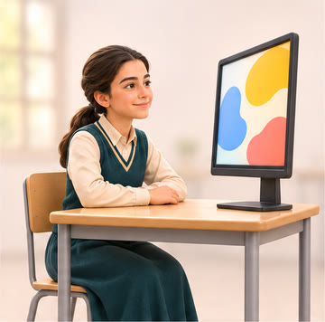
اِفْتَحْ / اِفْتَحي
Kitap ve dışa açılan iki ok: eylemin kendisi. Sahnede kapağı kaldırma hâli küçükte kitap gibi değil kutu gibi okunabiliyor.
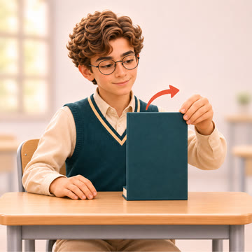
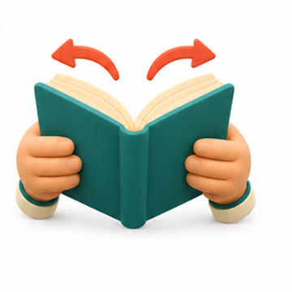
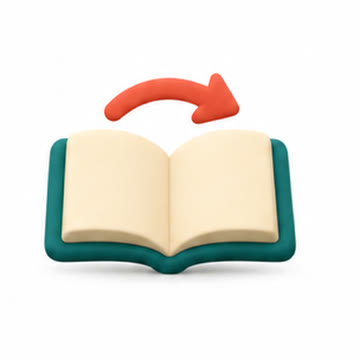
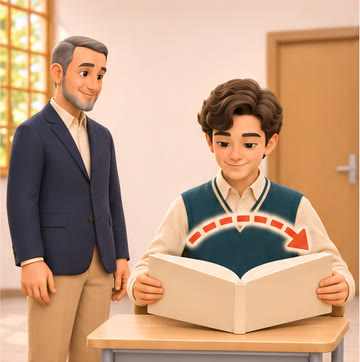
أَغْلِقْ / أَغْلِقي
Aynı kitap, içe kapanan oklar; aç ile birebir ayna.
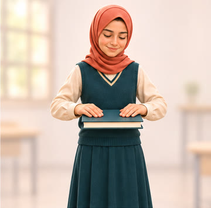
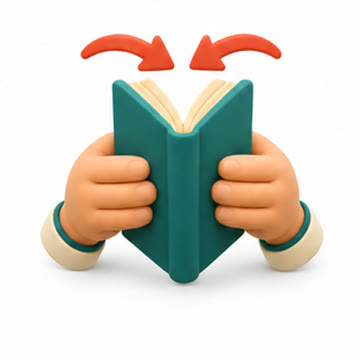
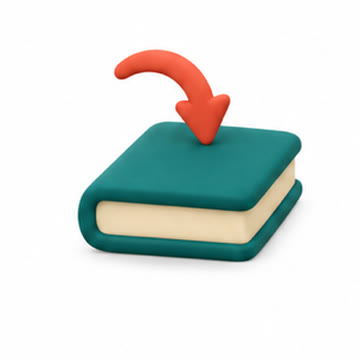
أَعْطِ / أَعْطي
Kalem bize uzatılıyor; izleyici alan kişi olduğu için yön açık.
خُذْ / خُذي
Alttan giren el kalemi tutuyor, öğrenci alıyor. Ver ile çift basılırsa (D) en kesin.
Öğretmen hep solda ve aynı pozda; yalnız öğrencinin yönü ya da eylemi değişir. Çift hâlinde, yan yana basılmak için.
Yönerge sözlüğünün (YK-11) fiillerine birer simge. Kitaptaki bölüm simgeleriyle aynı aileden; yönerge satırının başında 10–14 mm basılmak için.
| Usul | 300 ppi'de en büyük | Önerilen en küçük |
|---|---|---|
| A Sahne | ~40 mm | 25 mm |
| B El işareti | ~26 mm | 16 mm |
| C Simge + ok | ~26 mm | 12 mm |
| D Çift (her hücre) | ~40 mm | 25 mm |
| Yönerge simgesi | ~26 mm | 10 mm |